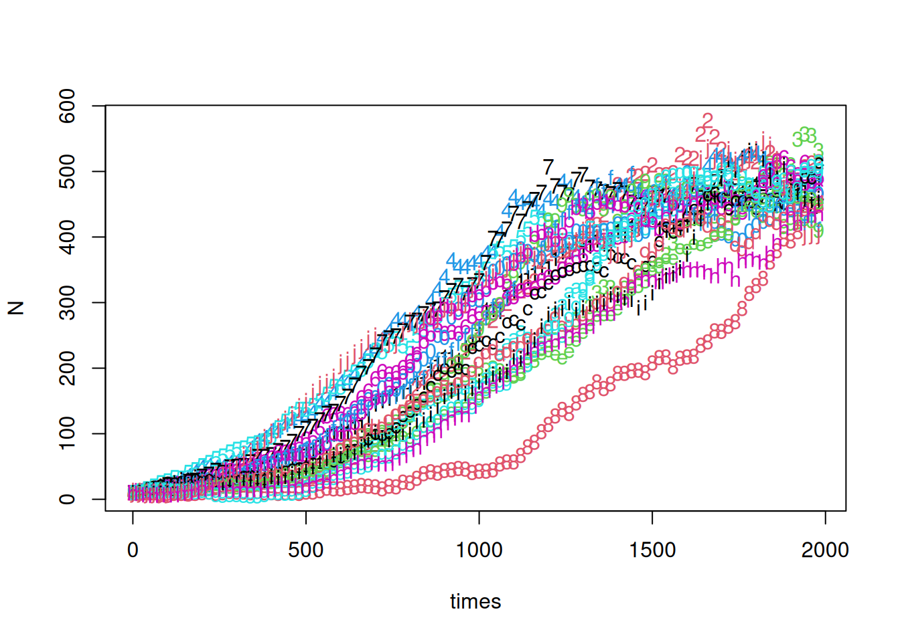
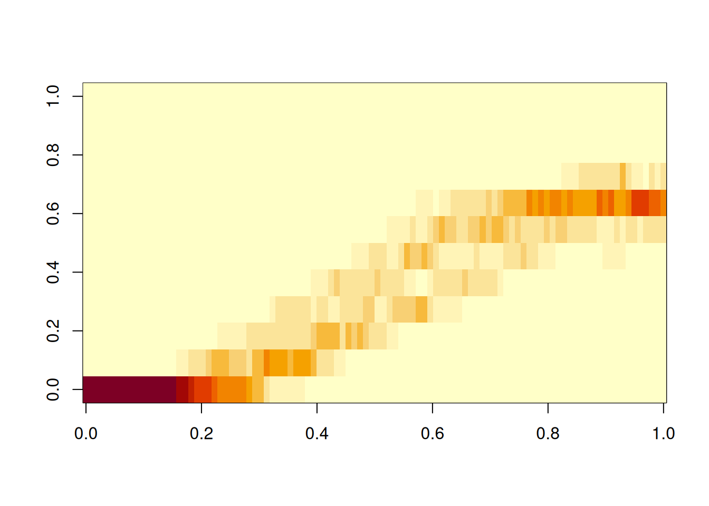
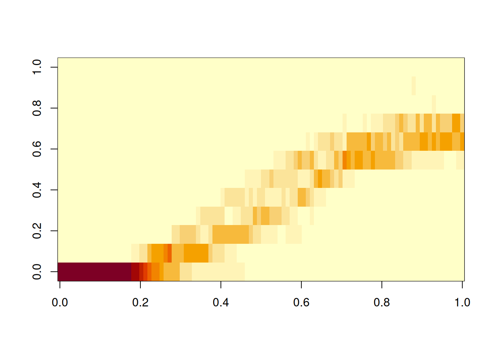

Show the code
births = function(n) b*n
deaths = function(n) (d+((b-d)/K)*n)*n
b = 0.01
d = 0.006
K=500
No = 10As populations get larger, inter-event times get shorter and simulations using the Gillespie-SSA can be time-consuming. One method to speed up computations, at the expense of some of the exactness of the Gillespie algorithm, is to take fixed time steps of some length \(\tau\) and approximate the number of events as a Poisson random variable.
Consider again the simple birth process with rate \(b\). We found the number of births in a time \(t\) was a Poisson random variable with parameter \(bt\). These results are easy to extend to the nonlinear birth-death process (see Allen 2011). To simplify our previous notation, suppose \(b_n\) and \(d_n\) are the birth and death rates given a current population size \(n\). Thus in a (vanishingly) small time interval \(\tau\), a single birth occurs with probability \(b_n\tau + o(\tau)\), a single death occurs with probability \(d_n\tau + o(\tau)\), a combination of the two events occurs with probability \(o(\tau)\), and neither event occurs with probability \(1 - (b_n + d_n)\tau + o(\tau)\). Allowing a longer time step, still denoted by \(\tau\), the number of births and deaths occurring during the step are Poisson random variables with rates \(b_n\tau\) and \(d_n\tau\) respectively.
To illustrate, use our logistic birth-death process with \(b_n = bn\) and \(d_n = (d+cn)n\). We’ll refer to \(b_n\) and \(d_n\) as the birth and rates and to \(b\) and \(d\) as the per-capita birth and death rates.
First, set up the birth and death rates and pick some parameters.
births = function(n) b*n
deaths = function(n) (d+((b-d)/K)*n)*n
b = 0.01
d = 0.006
K=500
No = 10With these rates, we should expect on average 5 births and 5 deaths per unit time at a population of 500. If we take a step size of 20 time units, we expect 100 births and 100 deaths on average. This may seem large, but the standard deviation of the Poisson distribution with mean 100 is 10.
stepsize = 20
times = seq(0,by=stepsize,length=100)
samples = 20
N = matrix(0,nrow=length(times),ncol=samples)
N[1,] = NoNow we’ve set up a sequence of times and a matrix to hold the results for 20 sample paths. A simple for loop can be used to fill in the rows of n.
for (i in 2:(length(times))) {
newbirths = pmax(0,births(N[i-1,])*stepsize)
newdeaths = pmax(0,deaths(N[i-1,])*stepsize)
N[i,] = N[i-1,] + rpois(samples,newbirths) - rpois(samples,newdeaths)
}
matplot(times,N)
Creating a heatmap-like image of the results is another good visualization trick, especially for larger samples.
breaks = seq(0,1.5*K,length=13)
breaks[1] = min(N,na.rm=TRUE)
breaks[13] = max(N,na.rm=TRUE)
H = matrix(0,nrow=length(times),ncol=12)
for (i in 1:length(times)) {
H[i,] = hist(N[i,],breaks=breaks,plot=FALSE)$counts
}
image(H)
Do a few sanity checks before running the for loop. Make sure the breaks do cover the range of N, and that the number of breaks is 12, which is assumed in initializing H.
To compare with the results of the Gillespie SSA, compute a few sample paths that way.
library(GillespieSSA2)
initial_state <- c(population = No)
params <- c(b = b, d = d, K = K)
reactions <- list(
# propensity function effects name for reaction
reaction("b * population", c(population = +1), "birth"),
reaction("(d+(b-d)*population/K) * population", c(population = -1), "death")
)
Nssa = matrix(0,nrow=length(times),ncol=samples)
for (i in 1:samples) {
out <-
ssa(
initial_state = initial_state,
reactions = reactions,
params = params,
method = ssa_exact(),
final_time = times[length(times)],
census_interval = stepsize,
log_buffer=TRUE,
verbose = FALSE
)
Nssa[,i] = out$state
}
breaks[1] = min(Nssa,na.rm=TRUE)
breaks[12] = max(Nssa,na.rm=TRUE)
Hssa = matrix(0,nrow=length(times),ncol=12)
for (i in 1:length(times)) { Hssa[i,] = hist(Nssa[i,],breaks=breaks,plot=FALSE)$counts }
image(Hssa)
τ-leaping can be done with the ssa routines. Details can be found in help pages for ssa_exact, ssa_etl and ssa_btl.
When \(\lambda\) is large, the normal distribution with mean \(\lambda\) and variance \(\lambda\) is a reasonable approximation to the Poisson distribution with rate \(\lambda\). Better still, if \(B\) and \(D\) are normally distributed random variables with means \(\mu_b\) and \(\mu_d\), and variances \(\sigma_b^2\) and \(\sigma_d^2\) respectively, then the difference, \(B-D\), has a normal distribution with mean \(\mu_b-\mu_d\) and variance \(\sigma^b+\sigma^2_d\).
for (i in 2:(length(times))) {
rate_b = births(N[i-1,])*stepsize
rate_d = deaths(N[i-1,])*stepsize
N[i,] = N[i-1,] + rate_b-rate_d + sqrt(rate_b+rate_d)*rnorm(samples,0,1)
}Let \(N(t)\) be the random variable denoting the population at time \(t\), let \(dt\) denote our stepsize, and set \(dN(t) = N(t+dt) - N(t)\). This lets us write the stochastic difference equation in the last code snippet as \[ dN = (B(N)-D(N))dt + dW\] with \(dW\) a normally distributed random variable with mean zero and variance \((B(N)-D(N))dt\). Taking a limit as \(dt\to0\) leads us into the realm of stochastic differential equations. Linda Allen (Allen 2011) gives a nice treatment of these in the context of biological applications. Our treatment here will be simpler: we’ll ignore \(dW\) and just look at the simpler differential equation.
\[\frac{d}{dt}N = B(N) - D(N)\]
In the case of our logistic birth and death rates, this is
\[\frac{d}{dt}N = rN(1-N/K)\] with \(r = b-d\)
As an exercise, solve this separable differential equation via the trick of integrating \[\int \frac{1}{N(1-N/K)}\, dN = \int r\, dt\] and add the solution to the plot of the stochastic simulation results computed earlier.